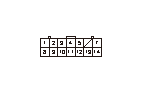

DTC B2035
DTC B2035:
L.ハーフ ラッチ スイッチ回路の短絡
再現テスト
1-1
HDSをデータ リンク カプラに接続する
1-2
イグニッション スイッチをON（
II
）にする
1-3
HDSでDTCをクリアする
1-4
運転席のパワー スライド ドア メイン スイッチをONにする
1-5
L.パワー スライド ドアを全閉にする
1-6
運転席のL.パワー スライド ドア スイッチでL.スライド ドアを全開する
1-7
“テスト モード メニュー”でDTCを確認する
◆ DTC B2035を表示するか
YES
-
ステップ
2
へ進む
NO
-
一過性故障、現在システムは正常
L.ハーフ ラッチ スイッチ（H/L）信号の入力確認1
-1
L.パワー スライド ドアを全開にする
-2
HDSの“データ リスト”で“L.ハーフ ラッチ スイッチ”のON/OFF情報を確認する
◆ OFF表示か
YES
-
L.パワー スライド ドア コントロール ユニット不良
NO
-
ステップ
3
へ進む
L.ハーフ ラッチ スイッチ（H/L）信号の入力確認2
-1
L.スライド ドア クローザ アッセンブリからBカプラ（6P）の接続を外す
-2
HDSの“データ リスト”で“L.ハーフ ラッチ スイッチ”のON/OFF情報を確認する
◆ OFF表示か
YES
-
L.ハーフ ラッチ スイッチの故障または内部短絡、L.スライド ドア クローザ アッセンブリを交換する
NO
-
ステップ
4
へ進む
L.パワー スライド ドア コントロール ユニットとL.ハーフ ラッチ スイッチ間（H/Lライン）のボディ短絡点検
-1
イグニッション スイッチをOFFにする
-2
L.パワー スライド ドア コントロール ユニットからAカプラ（14P）の接続を外す
-3
L.パワー スライド ドア コントロール ユニットAカプラ（14P）のNo.1端子とボディ アース間の導通を点検する
◆ 導通があるか
YES
-
コードのボディ短絡
NO
-
L.パワー スライド ドア コントロール ユニット不良
